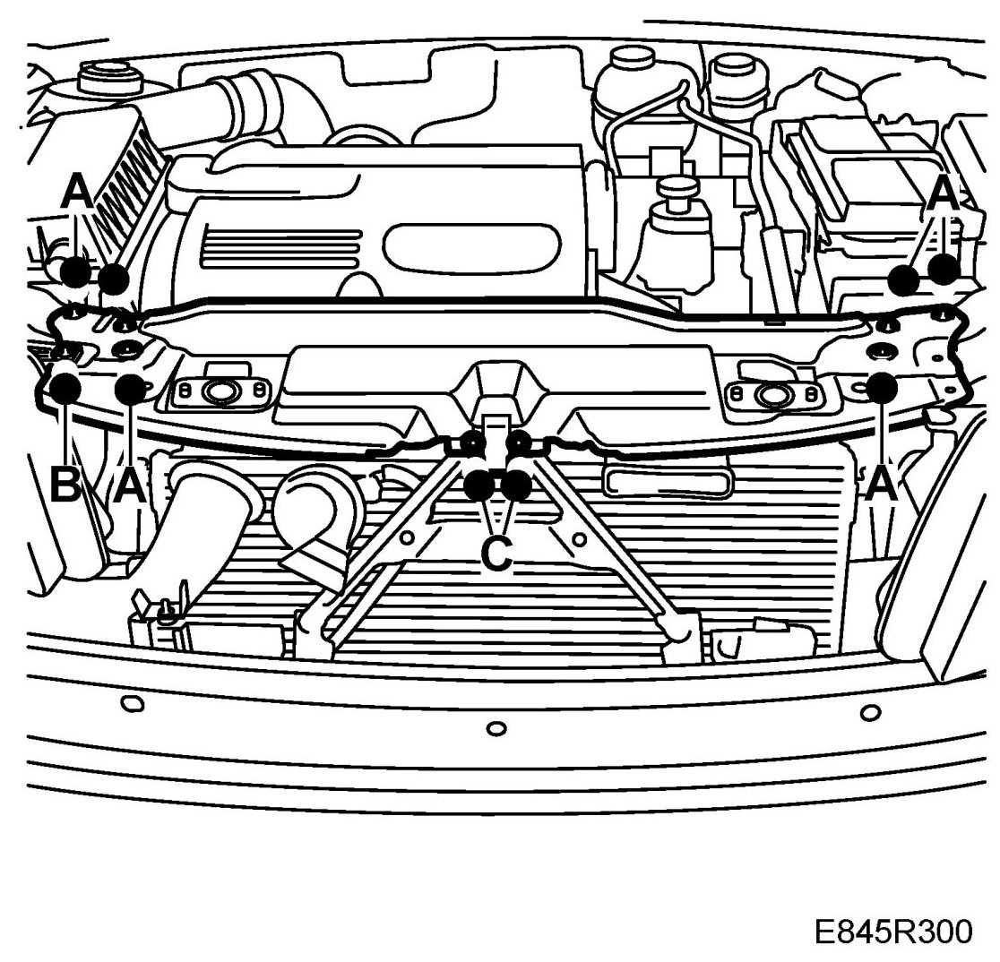
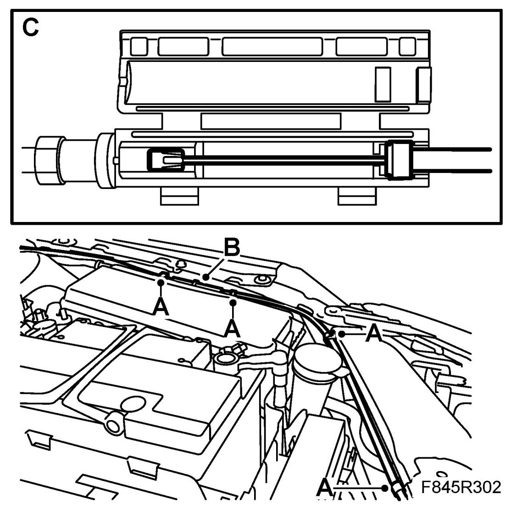
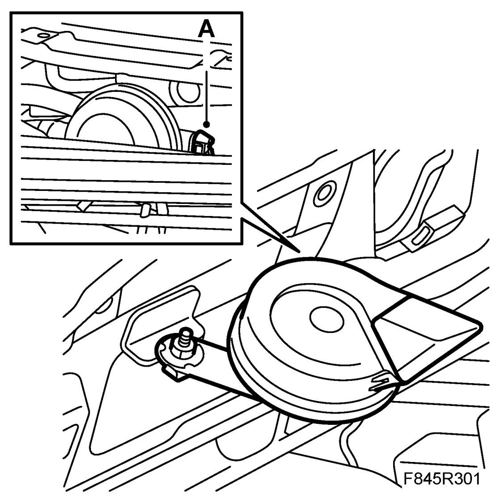

Upper Radiator Member
Upper Radiator Member
To remove
1. Remove the battery cover. Remove the battery cooling pipe.
2. Remove the front bumper shell.
3. Remove the left-hand Headlight.
4. 4-cyl diesel: Remove the A/C pipe clips from the radiator member.
5. 4-cyl diesel: Remove the mounting with the boost pressure valve from the radiator member.
6. Remove the bolts (A) holding the radiator member.

7. Remove the left-hand bolt (B) on the right-hand headlight.
8. Remove the bolts (C) securing the centre stay.
WARNING: Ensure that you do not place the top radiator bracket on the battery positive terminal, otherwise there is a risk of short-circuit/fire.
IMPORTANT: Take care so that the horn does not damage the condenser or AC pipe.
9. Remove the radiator member. At the same time, unplug the horn connector (A).
10. Remove the bonnet catch cable.
- Detach the clips (A) for the body.

- Cut off the cable tie (B)
- Split the quick coupling (C). Use a screwdriver.
To fit
1. Fit the bonnet catch cable.
- Assemble the quick coupling (C)
- Fit the cable tie (B)
- Fit the cable to the clips (A)
2. Fit the radiator member in position and plug in the horn connector (A) at the same time.

3. Make sure the centre stay is positioned behind the member. Press in the stay into its correct position.
4. Thread the centre stay's bolts (C) and the radiator member's bolt's (A).
5. Tighten the centre stay's bolts (C) first to ensure a good fit.
6. Tighten the bolts (A) holding the radiator member to the body.
7. Fit the left-hand bolt (B) on the right-hand headlight.
8. Fit the left-hand headlight.
9. 4-cyl diesel: Fit the mounting with the boost pressure valve to the radiator member.
10. 4-cyl diesel: Fit the A/C pipe clips to the radiator member.
11. Fit the front bumper shell.
12. Fit the battery's cooling pipe and the battery cover.
13. Check that the bonnet catch is functioning correctly.
14. Check the headlight alignment, see Headlights, headlight alignment, Headlights, headlight alignment (US/CA).